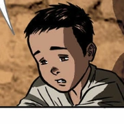

Noli Me Tangere
Table of Contents
- Background
- Character List
- Crisostomo Ibarra
- Maria Clara
- Padre Damaso
- Padre Salvi
- Padre Sibyla
- Kapitan Tiago
- Tiya Isabel
- Tinyente Guevarra
- Pilosopo Tasyo
- Sisa
- Basilio
- Crispin
- References
Background of the Novel
Noli Me Tangere, the translation of "Touch Me Not" in Latin, was written by Jose Rizal, one of the country's most significant heroes in history. Noli Me Tangere, along with El Filibusterismo, were the two novels of Rizal that were used to combat against the Spaniards during the time of the Spanish Colonization. The author started writing this novel in 1884, and he finished writing it in 1886. It was first published in Berlin the year after. The original copy was written in Spanish, and a number of authors have created versions of this novel in English and Filipino.
The historical novel is relevant to this day, as it is being taught in several schools. It demonstrates to people what the Filipinos went through during the Spanish period. It also makes people aware and educated about the various social, political, and moral issues that the world faces today. Each character in the novel symbolizes a certain issue that is relevant today.
Primary Characters in the Novel
| NOLI ME TANGERE CHARACTERS | APPEARANCE | NAME AND ALIAS | DESCRIPTION |  |
Juan Crisostomo Ibarra y Magsalin (Crisostomo Ibarra) |
|
 |
Maria Clara de los Santos y Alba (Maria Clara) |
|
 |
Damaso Verdolagas (Padre Damaso) |
|
 |
Bernardo Salvi (Padre Salvi) |
|
Hernando de la Sibyla (Padre Sibyla) |
|
 |
Don Santiago de los Santos (Kapitan Tiago/Don Tiago) |
|
 |
Isabel Alba (Tiya Isabel) |
|
 |
Miguel Guevarra (Tinyente Guevarra) |
|
 |
Anastacio (Pilosopo Tasyo/Mang Tasyo/Baliw) |
|
 |
Narcisa (Sisa) |
|
 |
Basilio |
|
 | Crispin |
|
|---|
References:
Content:
- Noli Me Tangere Characters and Their Traits. Noypi.com.ph. (2023, July 28). https://noypi.com.ph/noli-me-tangere-characters/
- Francia, L. H. (n.d.). Noli Me Tangere (Touch Me Not) Reader’s Guide. PenguinRandomhouse.com. https://www.penguinrandomhouse.com/books/291131/noli-me-tangere-touch-me-not-by-jose-rizal/9780143039693/readers-guide/
- Miriam, M. (n.d.). Noli me tangere summary. iWriteEssays. https://www.iwriteessays.com/book/noli-me-tangere-summary
- Cruz, E. G. (2018). Noli Me Tangere ni Jose Rizal. C & E Publishing, Inc.
Images (WikiFandom):
Website created by Allison Lopez on October 20, 2023.